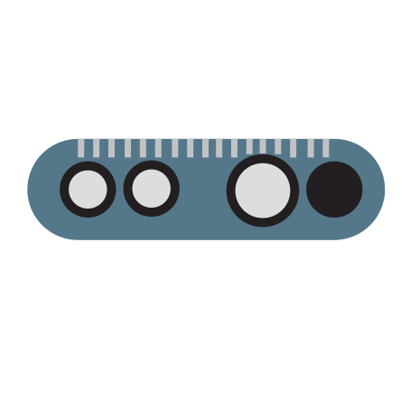
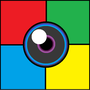

Welcome to ARsandbox
Click > To Continue
Build Your Setup
+

+
Start Autoscreen.exe
Capturing starts immediately,
the correct settings are already applied.

Start Realsenseviewer
Drag the window to the pc`s monitor and make
sure it fills the screen.
Drag this windows to the projector
and enable Fullscreen.
Enable Fullscreen and start ARsandbox
❮
❯